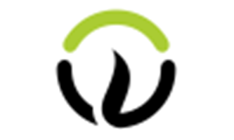

About Us
Testimonial
Beyond Responsive Design: Contextual Merchandising alleywatch.com Responsive design is steadily gaining adoption as it offers a scalable way to serve your website across different screen sizes, namely mobile devices like smartphones and tablets. But responsive...
 Webonise Lab is a product development consultancy with a team of 150 talented software engineers, usability experts and business analysts. We are a fun, talented team who love working together and have a passion for building remarkable software that people love to use. The company puts a premium on strong communication and long-term relationships with our clients. Serving clients in 10 countries, our headquarter offices are based in Raleigh, North Carolina and Pune India. Both technology hubs, both great college towns. Additionally, we have staff or small teams in the UK, Indiana, Florida, Toronto, and Mexico. Our global approach provides our clients with great communication, around the clock development cycles, and the ability to customize a team to meet our clients strategic and affordability goals. We are a company whose foundation is wildly talented staff. Selective hiring, strong benefits, bootcamp training ensure we have a disciplined team, full of top talent few firms can match. As a result, we are a company that loves to take on the hard stuff. We work inside industries as diverse as media, aerospace, agriculture, finance, sports, even cloud computing. Testament to many of our ground-breaking projects, we have become experts at helping our clients with patents on much of the new stuff we have built. We are proud to be able to contribute to our clients successes, the digital ecosystem and in improving the lives of our staff and their families. Specialties Agile, CakePHP, Php, RubyOnRails, User Interface, Design, Android, iPhone, Mongo, Java, QA Testing, Responsive Design, Cloud Implementation, Sports related development